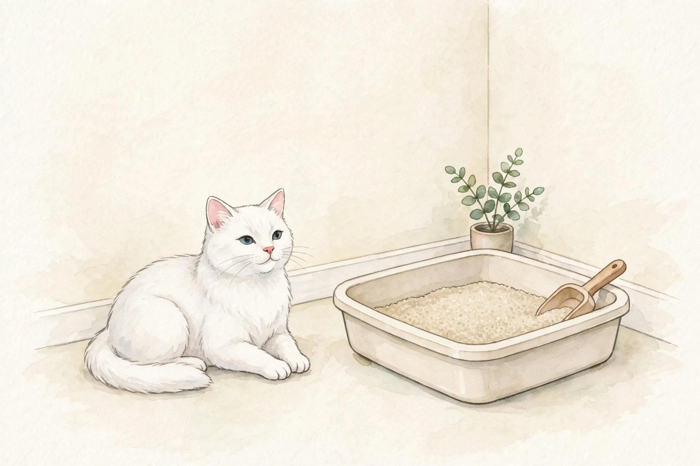

猫のトイレの砂の選び方

猫のトイレの砂にはいろいろな素材があり、どれが正解というより、猫が気に入って使ってくれるかどうかが基準になります。この記事は一般的な飼育・ケアの情報で、病気の診断や治療のためのものではありません。トイレの様子に気になる変化が続くときは、動物病院に相談してください。
砂の種類と特徴
- 紙：軽くて持ち運びしやすく、燃えるゴミに出せる地域が多い素材です。処分の方法は自治体のルールを確認してください
- 木：木の香りがあり、吸水するタイプと崩れるタイプがあります
- 鉱物（ベントナイトなど）：尿で固まり、粒の感触が自然の砂に近いため好む猫が多いとされます。重く、粉が立ちやすいものもあります
- おから：軽く、トイレに流せるタイプもあります（配管の条件はメーカーの表示を確認してください）
- シリカゲル：吸水と消臭に優れ、交換の手間が少なめです。粒を食べないよう注意してください
まずこれ（PR）
選び方のポイント
- 猫の好みが最優先：使ってくれない砂は、どんなに便利でも意味がありません
- 処分のしやすさ：燃えるゴミに出せるか、トイレに流せるかは、お住まいの自治体と住まいの配管によります
- 飛び散りと粉立ち：粒の大きさや重さで変わります。掃除のしやすさにも関わります
- 固まり方：固まるタイプは汚れた部分だけ取り除けて、砂の補充がしやすくなります
砂の切り替え方
急に全て変えると使ってくれなくなることがあります。今の砂に新しい砂を少しずつ混ぜて割合を増やしていくか、新しい砂を入れたトイレを並べて置き、猫に選んでもらう方法が無難です。
トイレの数と置き場所
トイレの数は「猫の頭数＋1」が目安とされます。置き場所は、静かで落ち着ける場所、食事の場所から離れた場所が基本です。洗濯機のそばなど、大きな音がする場所を嫌がる猫もいます。
注意
- 砂を食べる様子が見られる場合は、その砂の使用を止めて、動物病院に相談してください。
- トイレの回数・量・様子がいつもと違う状態が続くときは、早めに動物病院へ相談してください。
- 香りの強い芳香タイプの砂は、猫が嫌がることがあります。精油（アロマオイル）系の消臭用品は猫に使わないでください。
おすすめ用品（PR）
この記事のテーマに合わせて選んだ用品です。詳しくは販売ページでご確認ください。


エステー ニャンとも清潔トイレ 脱臭・抗菌シート 12枚×4袋（ケース）
「ニャンとも清潔トイレ」専用のシート（45×35cm）です。専用システムトイレの下段トレーに敷いて使うもので、他のトイレ用ではありません。ケース販売で、まとめ買い向けです。
※本記事の商品リンクは楽天アフィリエイトによる広告リンクです。価格や在庫は販売ページでご確認ください。
猫のLINEスタンプ
このサイトの運営者（222キャラ工房）が作っている、猫のLINEスタンプです。毎日の連絡にどうぞ。